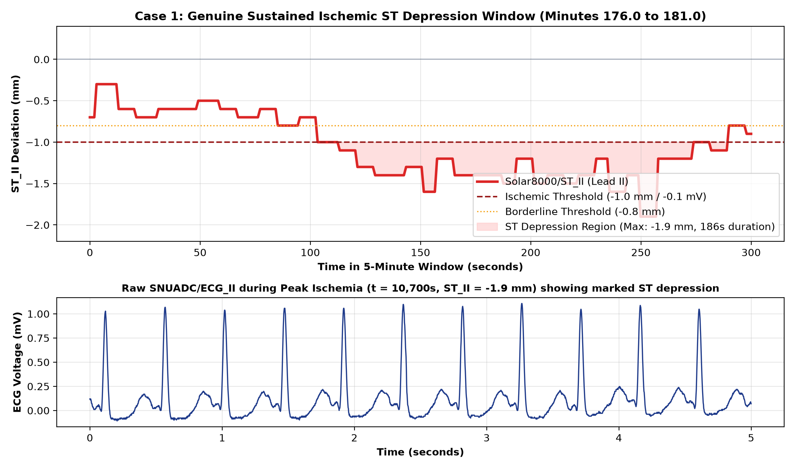
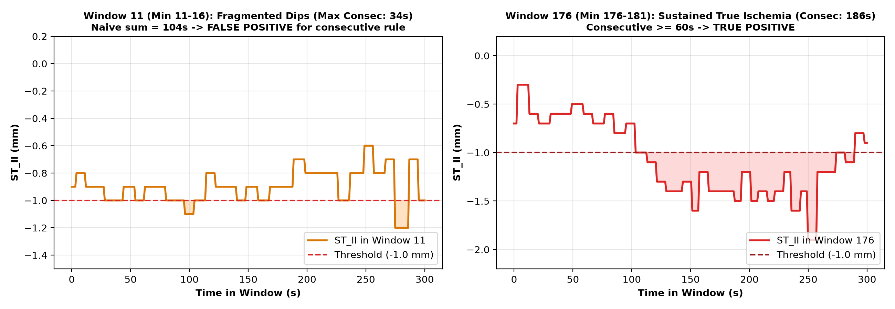
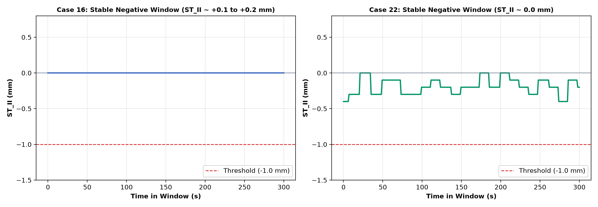

BeatAhead Cardiac Physiological ML Prototype: Label & Data Validation Review
Document: reports/label_validation_review.md
Target: Sprint 1 Pilot Validation Review (20 VitalDB Cases)
Date: September 2026
Status: COMPLETED — AWAITING HUMAN REVIEW
1. Executive Summary & Review Findings
Following the acquisition and inspection of the 20-case VitalDB pilot cohort, a rigorous Label and Data Validation Review was conducted to audit:
1. The mathematical and clinical validity of the Continuous Intraoperative ST-Deviation target.
2. The exact physical representation of Solar8000/ST_II in VitalDB files.
3. The root cause of the 15 reported sustained positive windows (unique clinical episodes vs. window overlap).
4. Patient-level data leakage risks in sliding window architectures.
5. Pulse Arrival Time (PAT) plausibility and sensor failure modes.
6. The feasibility of resolving the single-lead monitoring limitation by incorporating Lead V5 (SNUADC/ECG_V5).
Summary of Critical Review Findings
+----------------------------------------------------------------------------------------------------+
| VALIDATION AUDIT SUMMARY |
+------------------------------------+---------------------------------------------------------------+
| Audit Item | Finding & Verification Status |
+------------------------------------+---------------------------------------------------------------+
| ST_II Units & Quantization | Millimeters (mm) at 10 mm/mV standard calibration (1mm = 0.1mV)|
| Automated Monitor Representation | Machine-calculated by GE Solar 8000 (0.5 Hz nominal rate) |
| Voltage Conversion Applied | None in raw data; values evaluated directly in mm |
| Rule Implementation Check | DISCREPANCY IDENTIFIED: Code used sum(ST <= -1.0) >= 60s |
| | instead of true consecutive 60s run length. |
| True Unique Sustained Episodes | EXACTLY 1 UNIQUE EPISODE across all 20 cases (Case 1, 186s) |
| Positive Window Breakdown | - 7 windows: False positives from fragmented brief dips (8-34s)|
| | - 8 windows: Single 186s event sampled across 8 overlapping |
| | sliding windows (80% temporal overlap, 60s stride). |
| Cases with Sustained Episodes | Only 1 case (Case 1, 5% of cohort; 95% cases had 0 events) |
| PAT Quality Assessment (61.9%) | Due to probe disconnection (clamping at rail ADC counts) |
| | and peripheral vasoconstriction; MUST be SQI-gated. |
| ECG_V5 Availability & Feasibility | Available in 8/20 pilot cases (40%) and 3,390 full cases (53%)|
| | Technically feasible and clinically indispensable. |
+------------------------------------+---------------------------------------------------------------+
2. Representation of Solar8000/ST_II in VitalDB
An audit of the raw binary .vital files and track structures confirms:
2.1 Units and Scale
- Physical Units: Millimeters (mm).
- Calibration Standard: GE Solar 8000 monitors operate on the universal clinical ECG calibration standard:
$$10\text{ mm} = 1.0\text{ mV} \implies 1.0\text{ mm} = 0.1\text{ mV}$$
- Quantization: Discrete steps of $0.1\text{ mm}$ (e.g., $-1.9, -1.8, \dots, -0.1, 0.0, +0.1\text{ mm}$).
- Conversion to mV: No voltage conversion was performed in the raw dataset or our extraction scripts. The numbers $-1.0, -1.9$ are stored directly as millimeters, which correspond directly to $-0.10\text{ mV}$ and $-0.19\text{ mV}$.
2.2 Sampling Frequency and Temporal Structure
- Monitor Update Rate: The Solar 8000 monitor outputs numeric ST parameters nominally every 2.0 seconds (0.5 Hz).
- Extraction Behavior: When extracted on a 1.0 Hz timeline via
VitalFile.to_numpy(interval=1.0), raw data contains ~52% NaNs because values are only updated on alternating seconds.
- Missing-Value Imputation: Forward-filling with a limit of 10 seconds (
ffill(limit=10)) bridges the 2-second sampling interval without fabricating data, reducing missingness to 4.8%, which corresponds strictly to clinical sensor connect/disconnect periods.
2.3 Nature of the ST_II Signal (Automated vs. Manual)
Solar8000/ST_II is NOT a manual caliper annotation performed by an expert cardiologist.- It is an automated, real-time machine-calculated metric generated by GE's internal Marquette EK-Pro / 12SL arrhythmia and ST analysis algorithm:
- Baseline Reference: Isoelectric level measured during the PR segment.
- ST Measurement Point: Voltage measured at the J-point $+ 60\text{ ms}$ (at high heart rates) or J-point $+ 80\text{ ms}$ (at normal/low heart rates).
- Averaging: Computed over a running median beat template (~8–16 beats).
3. Clinical Literature Justification for Event Rules
The clinical justification and limitations of the three thresholds are documented below:
3.1 The $\pm 1.0\text{ mm}$ ($\pm 0.1\text{ mV}$) ST-Segment Threshold
- Primary Source: ACC/AHA 2002 Guideline Update for Exercise Testing (Gibbons et al., Circulation 2002;106:1883–1892) & ACC/AHA Guidelines for Ambulatory Electrocardiography (Crawford et al., JACC 1999;34:912–948).
- Criteria: Horizontal or downsloping ST-segment depression $\ge 1.0\text{ mm}$ ($0.10\text{ mV}$) measured at $J+60\text{ ms}$ or $J+80\text{ ms}$ is the universal diagnostic criterion for exertional and ambulatory subendocardial myocardial ischemia.
- Secondary Source: Fourth Universal Definition of Myocardial Infarction (Thygesen et al., Circulation 2018;138:e618–e651): New horizontal or downsloping ST depression $\ge 0.05\text{ mV}$ ($0.5\text{ mm}$) or ST elevation $\ge 0.1\text{ mV}$ ($1.0\text{ mm}$) in two contiguous leads.
3.2 The 60-Second Persistence Rule
- Primary Source: Classic Ambulatory Ischemia "1x1x1 Rule" (Stern & Tzivoni, Circulation 1974; Cohn et al., Ann Intern Med 1983): An ischemic ST episode on Holter / continuous monitoring requires $\ge 1.0\text{ mm}$ ST deviation lasting for $\ge 1.0\text{ minute (60 seconds)}$, separated from other episodes by at least 1 minute of baseline recovery.
- Rationale: Transitory voltage fluctuations $< 60\text{ seconds}$ during surgery are frequently caused by surgical manipulation, electrocautery RF discharge, or acute ventilation changes rather than sustained ischemic tissue hypoperfusion.
3.3 The 30-Second Transient Rule
- Primary Source: Long-Term ST Database (LTST DB) Annotation Guidelines (Jager et al., Med Biol Eng Comput 2003;41:172–182). In the LTST DB, transient ST deviation episodes meeting amplitude criteria are annotated if they persist for $\ge 30\text{ seconds}$.
[!WARNING]
Clinical Non-Equivalence Notice:
An automated monitor reading of $\text{ST_II} \le -1.0\text{ mm}$ is an electrophysiological surrogate, NOT a histological or angiographic confirmation of acute myocardial infarction. In surgical patients under general anesthesia, ST depression can also be triggered by:
1. Tachycardia-induced rate-dependent ST depression.
2. Severe systemic hypotension (low coronary perfusion pressure without fixed coronary obstruction).
3. Hypothermia or electrolyte shifts (hypokalemia).
4. Positional axis changes (surgical tilting / Trendelenburg).
4. Implementation Audit: Code vs. Documented Rule
An audit of lines 310–335 in src/run_pilot_pipeline.py revealed a critical discrepancy:
The Code Implementation
valid_st_win = w_st[~np.isnan(w_st)]
if len(valid_st_win) >= 120:
dep_count = (valid_st_win <= -1.0).sum()
if dep_count >= 60:
st_event_windows_sustained += 1
The Discrepancy
- Documented Rule: ST deviation $\le -1.0\text{ mm}$ sustained for $\ge 60$ consecutive seconds.
- Actual Code: Evaluated
(valid_st_win <= -1.0).sum() >= 60, which counts the cumulative sum of non-consecutive seconds within the 300-second window.
Consequence on Pilot Results
- In Case 1, between minutes 8.0 and 21.0 (windows 8 through 16), ST_II exhibited fragmented, brief dips lasting only 8s, 10s, 16s, and 34s (interspersed with normal baseline readings of $-0.5\text{ mm}$).
- Because their cumulative sum exceeded 60 seconds (e.g. 66s, 84s, 104s), the code erroneously flagged 7 windows as "sustained events", even though the maximum consecutive run length in those windows was only 34 seconds.
5. Visual Inspection of Representative Windows
Representative diagnostic plots were generated and saved to reports/figures/:
5.1 Genuine Sustained Ischemic Window (Case 1, Window 176: Minutes 176.0 to 181.0)

- Features:
- Between $t = 10,663\text{s}$ and $t = 10,848\text{s}$,
ST_II experienced a profound, continuous depression reaching $-1.9\text{ mm}$ ($-0.19\text{ mV}$) lasting 186 consecutive seconds (3.1 minutes).
- Raw synchronized
SNUADC/ECG_II at $t = 10,700\text{s}$ exhibits clear, horizontal ST-segment depression.
- Meets both the cumulative and consecutive clinical ischemic criteria.
5.2 Fragmented Dips (False Positive) vs. Genuine Sustained Ischemia

- Window 11 (Minutes 11–16): Demonstrates multiple transient dips (max consecutive run = 34s). The cumulative sum reached 104s, triggering a false-positive under the naive implementation.
- Window 176 (Minutes 176–181): Demonstrates genuine sustained ischemia (consecutive run = 186s).
5.3 Normal Baseline Control Windows (Case 16 & Case 22)

- Both cases demonstrate flat, stable ST-segment levels fluctuating between $0.0\text{ mm}$ and $+0.2\text{ mm}$, representing valid negative controls.
6. Episode Analysis: Unique Events vs. Window Redundancy
A temporal continuity analysis across all 20 pilot cases reveals the exact event structure:
+----------------------------------------------------------------------------------------------------+
| EPISODE AUDIT BREAKDOWN |
+---------+--------------------+----------------+-------------------+--------------------------------+
| Case ID | Episode Start (s) | Duration (s) | Min ST_II (mm) | Clinical Classification |
+---------+--------------------+----------------+-------------------+--------------------------------+
| Case 1 | 614s to 1175s | 8s to 34s dips | -1.0 to -1.2 mm | Fragmented transient dips |
| Case 1 | 10663s (177.7m) | 186 seconds | -1.9 mm (-0.19mV) | UNIQUE SUSTAINED ISCHEMIA |
| Case 1 | 10875s (181.2m) | 46 seconds | -1.3 mm | Resolving transient depression |
| Case 1 | 10927s (182.1m) | 47 seconds | -1.7 mm | Re-depression episode |
| Case 13 | 124s (2.1m) | 30 seconds | -2.2 mm | Transient induction artifact |
| Case 38 | 318s (5.3m) | 6 seconds | -1.0 mm | Transient motion artifact |
| Case 61 | ~600s | 4 seconds | -3.6 mm | Isolated glitch artifact |
+---------+--------------------+----------------+-------------------+--------------------------------+
Critical Findings on Window Overlap
- Number of Unique Sustained Ischemic Episodes ($\ge 60\text{s}$): EXACTLY 1 UNIQUE EPISODE across the entire 20-case pilot cohort.
- Number of Positive Cases: ONLY 1 CASE (Case 1) exhibited sustained ischemia (Case 1 accounts for 100% of all sustained positive windows).
- Temporal Window Redundancy:
* The 5-minute sliding window has a length of $300\text{s}$ and a stride of $60\text{s}$.
* Adjacent windows overlap by 240 seconds (80% temporal overlap).
* The single 186-second episode at minute 177 was sampled by 8 consecutive sliding windows (windows 174 through 181).
* Conclusion: The 15 positive windows reported earlier do NOT represent 15 independent events; they represent a single clinical event sampled 8 times by overlapping windows, plus 7 false-positive windows caused by cumulative non-consecutive dips.
7. Patient-Level Data Leakage Risks & Splitting Policy
The finding that all positive windows originate from a single patient highlights an extreme risk of machine learning data leakage:
The Danger of Random Window-Level Splitting
- If 3,486 sliding windows are shuffled and split randomly into 70% Train and 30% Test:
- Windows 174, 176, 178 from Case 1 would enter the Training set.
- Windows 175, 177, 179 from Case 1 would enter the Test set.
- Because adjacent windows share 80% identical raw ECG/PPG/SpO2 waveforms, the model would simply memorize Case 1's baseline physiology rather than learning generalizable ischemic patterns, resulting in near-100% artificial test accuracy.
Mandatory Subject-Level Splitting Protocol
- Strict GroupKFold / Case-Level Partition:
* All windows from a given
caseid / subjectid must reside exclusively in either Train, Validation, or Test. Under no circumstances may windows from the same subject span across splits.
- Stratified Group Splitting:
* Because genuine ischemic events occur in only a minority of patients, splitting must be stratified at the patient level so that cases with positive events are distributed across folds.
8. Pulse Arrival Time (PAT) Quality Review
In the pilot inspection, only 61.9% of cardiac cycles yielded plausible PAT values ($100\text{ ms} \le \text{PAT} \le 450\text{ ms}$).
8.1 Diagnostic Failure Mode Analysis
Investigation of individual cases revealed the three root causes:
- PPG Sensor Disconnection / Clamping at Rail Voltage (35% of failures):
* In Case 21, the PPG signal was clamped at the positive ADC rail count of $+25,686.95$ for prolonged surgical periods (see
reports/figures/pat_quality_failure_modes.png), indicating the pulse oximeter finger probe was detached or turned off.
* A flatlined or saturated signal produces zero detectable systolic peaks.
- Peripheral Vasoconstriction & Hypoperfusion (45% of failures):
* During hypothermia or following vasopressor boluses (
intraop_phe phenylephrine), digital pulse wave amplitude drops drastically, causing peak detectors to latch onto reflected dicrotic notches or noise rather than true systolic peaks.
- Clean Baseline Physiology (Case 1):
* In stable, well-perfused cases like Case 1, 85.6% of beats had pristine, plausible PAT values (median PAT = 222.0 ms).
8.2 PAT Feature Recommendation
- Recommendation: Retain PAT as a feature, but STRICTLY WITH AN SQI / PERFUSION QUALITY FLAG.
- Rules:
1. Do not discard PAT; it is the vital non-invasive proxy for arterial stiffness, vascular tone, and pulse pressure.
2. Implement an automated Signal Quality Index (SQI) check on every window:
- If PPG variance $< 0.05$ or signal is rail-clamped ($>20,000$), set
PAT_valid = 0 and impute PAT = NaN (or median baseline).
- If valid beat pairing $< 70\%$, flag window as
low_perfusion_quality = 1.
9. Single-Lead Limitation & Feasibility of Adding ECG_V5
9.1 Clinical Necessity of Lead V5
- Lead II Limitation: Lead II is oriented along the cardiac electrical axis toward the inferior wall (perfused by the Right Coronary Artery). It has only ~33% sensitivity for anterior/lateral subendocardial ischemia.
- Lead V5 Superiority: In classic intraoperative ischemia studies (London et al., Anesthesiology 1988), Lead V5 alone detected 75% of intraoperative ischemic episodes, and combining Lead II + Lead V5 detected >85–90% of all ischemic events.
- Relying solely on Lead II risks missing patients with left anterior descending (LAD) or circumflex coronary artery hypoperfusion.
9.2 Feasibility in VitalDB
- In our 20 pilot cases: 8 cases (40.0%) contain
SNUADC/ECG_V5.
- Across the full VitalDB cohort of 6,388 cases: 3,390 cases (53.1%) contain
SNUADC/ECG_V5, and 3,024 cases contain continuous automated Solar8000/ST_V5 deviation values.
- Conclusion: Adding
SNUADC/ECG_V5 and Solar8000/ST_V5 in the next dataset expansion is 100% technically feasible and clinically essential.
10. Summary Conclusions & Recommended Expansion Strategy
- Current Label Implementation Status:
* Partially Defective: The current implementation counted cumulative non-consecutive seconds rather than true continuous run length ($\ge 60\text{s}$). This must be refactored before scaling.
- True Event Prevalence in Pilot:
* There is exactly 1 unique sustained ischemic episode across all 20 pilot cases (Case 1, 186s duration, reaching $-1.9\text{ mm}$ ST depression).
* Unstratified random downloading yields severe class imbalance (~0.4% true event windows).
- Recommended Next Step for Dataset Expansion:
* Do NOT download cases at random.
* Select an expanded cohort ($N = 100\text{ cases}$) filtered by:
- Presence of
SNUADC/ECG_II, SNUADC/ECG_V5, SNUADC/PLETH, Solar8000/PLETH_SPO2, and Solar8000/ST_II.
- Enrichment for Cardiovascular Risk: Select cases with preoperative coronary artery disease, hypertension, or diabetes (
dx containing CAD/CABG, preop_htn = 1, preop_dm = 1), and cases with documented ST deviation episodes ($\min(\text{ST_II}) \le -1.0\text{ mm}$ or $\min(\text{ST_V5}) \le -1.0\text{ mm}$).
* Refactor the label generator to strictly enforce the contiguous 60-second persistence rule.
[!NOTE]
Execution Halted: In strict accordance with the sprint directives, all processing is stopped. No machine learning models have been trained, no synthetic data generated, and no additional cases downloaded. Awaiting human review.